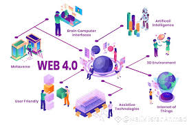

Web 4.0: The Intelligent Web
What is Web 4.0?
Web 4.0, often called the "Symbiotic Web" or the "Active Web," is the next evolutionary stage of the internet. It focuses on a highly intelligent interaction between humans and machines. In this era, the web is not just a tool we use, but an autonomous, proactive assistant that understands user needs through advanced AI and the Internet of Things (IoT).
Core Characteristics
Web 4.0 is characterized by its ability to think, reason, and respond in real-time:
- Ubiquity: The web is everywhere—integrated into your glasses, watch, car, and home appliances.
- Symbiotic Interaction: A constant, seamless connection between humans and machines (e.g., brain-computer interfaces or highly advanced voice assistants).
- Artificial Intelligence: High-level AI that can perform complex tasks, predict behaviors, and make decisions autonomously.
- Big Data: The ability to process massive amounts of data from billions of devices to provide hyper-personalized experiences.

The Future Experience
In Web 4.0, the internet moves away from screens and keyboards. It becomes an "Invisible Web" that powers smart cities and personalized medicine. Instead of searching for a restaurant, your personal AI agent might simply book a table for you based on your hunger levels, schedule, and nutritional needs, coordinating with the restaurant's autonomous systems.